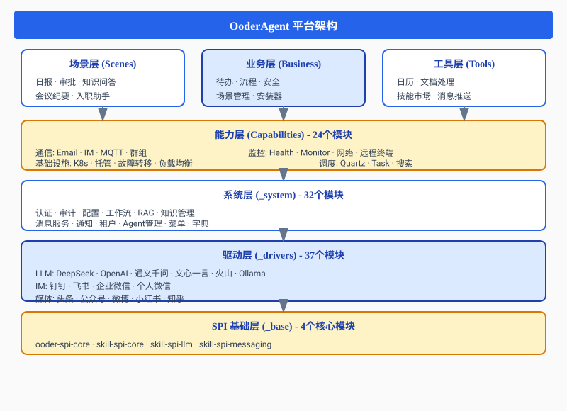
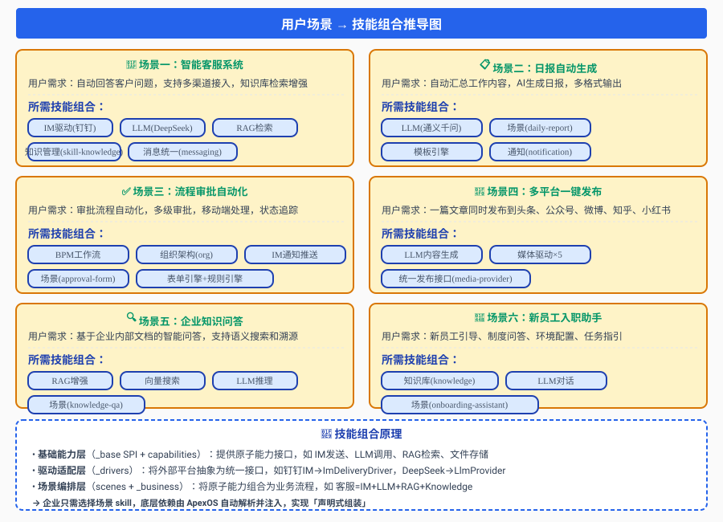
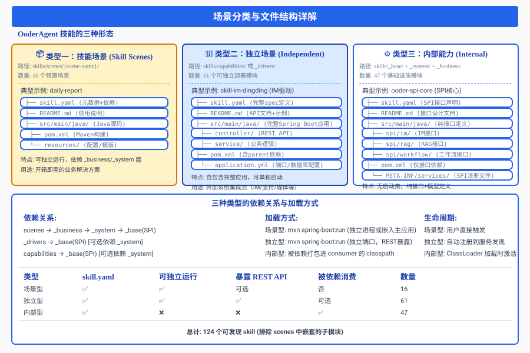
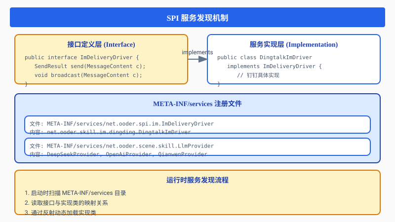
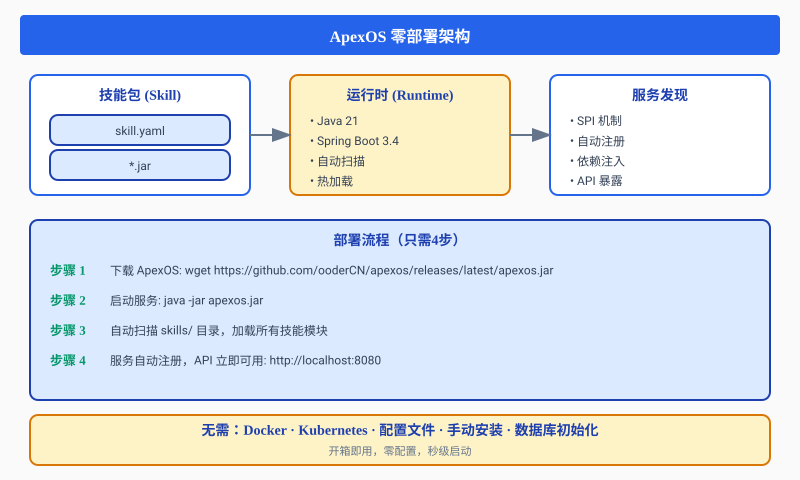
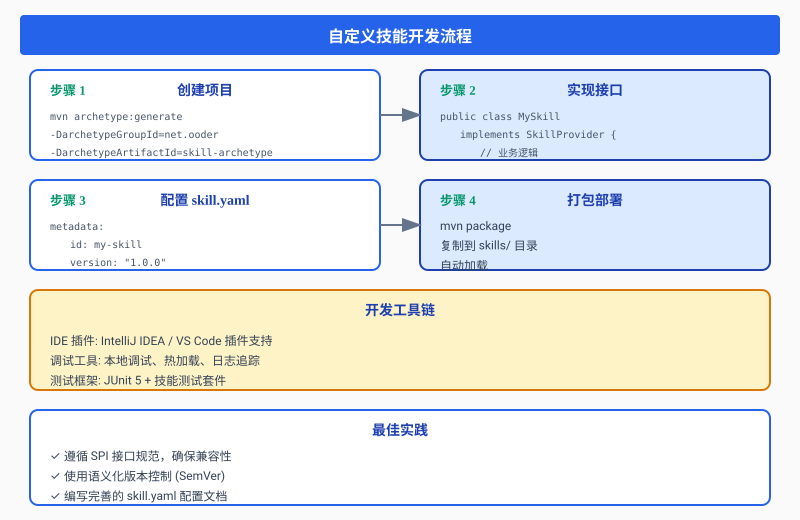
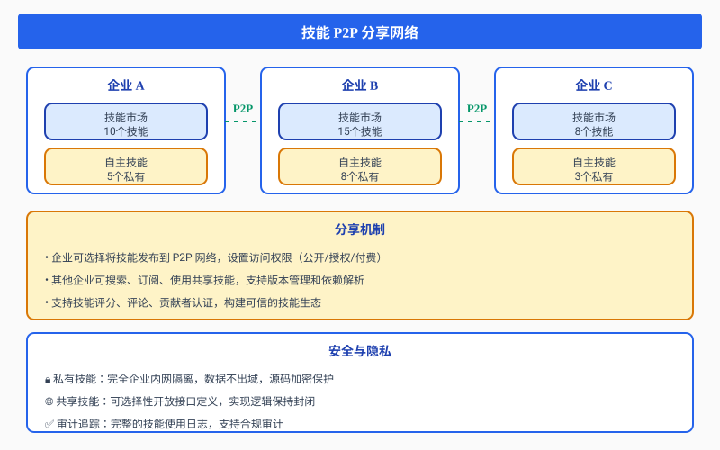
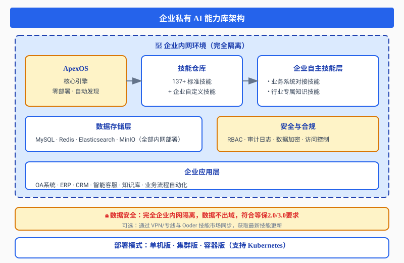

摘要：OoderAgent 是一个革命性的企业级 AI Agent 平台，基于技能架构（Skills Architecture）设计理念，让企业能够零部署、零安装即可构建自主私有的 AI 能力库。平台内置 137+ 种标准化技能，涵盖 LLM 集成、业务流程、知识管理、通讯协作等全场景，开箱即用，支持 P2P 能力分享，真正实现 AI 能力的民主化。
137+
标准化技能
零部署
开箱即用
MIT
开源协议
P2P
能力分享
一、OoderAgent 核心架构
1.1 技能架构设计理念
OoderAgent 采用技能即服务（Skills-as-a-Service）架构，将复杂的 AI 能力抽象为可插拔的技能模块：

1.2 核心特性
| 特性 | 说明 | 优势 |
|---|---|---|
| 零部署 | ApexOS 开箱即用 | 无需安装，启动即用 |
| MIT 开源 | 完全开源免费 | 企业自主可控 |
| 137+ 技能 | 覆盖全业务场景 | 开箱即用 |
| SPI 架构 | 标准化接口 | 易于扩展 |
| P2P 分享 | 技能点对点共享 | 生态共建 |
二、能力库全景：137种技能覆盖
2.1 技能分类统计
OoderAgent 能力库包含 137 个标准化技能模块，分布在 7 大层级：
| 层级 | 数量 | 占比 | 核心能力 |
|---|---|---|---|
| SPI 基础层 | 4 | 2.9% | 统一接口、服务发现 |
| 驱动层 | 37 | 27.0% | 外部系统集成 |
| 系统层 | 32 | 23.4% | 核心系统服务 |
| 能力层 | 24 | 17.5% | 可复用基础能力 |
| 场景层 | 16 | 11.7% | 业务场景封装 |
| 业务层 | 11 | 8.0% | 业务逻辑处理 |
| 工具层 | 10 | 7.3% | 辅助工具 |
2.2 驱动层：全平台集成能力
LLM 驱动矩阵（8个）
| 驱动 | 提供商 | 部署方式 |
|---|---|---|
| DeepSeek | 深度求索 | 云端 API |
| OpenAI | OpenAI | 云端 API |
| 通义千问 | 阿里云 | 云端 API |
| 文心一言 | 百度 | 云端 API |
| 火山引擎 | 字节跳动 | 云端 API |
| Ollama | 开源社区 | 本地部署 |
IM 通讯驱动（4个）
钉钉、飞书、企业微信、个人微信全覆盖，统一消息接口。
媒体发布驱动（5个）
今日头条、微信公众号、微博、小红书、知乎，一键多平台发布。
支付驱动（3个）
支付宝、微信支付、银联，统一支付接口。
三、技能库分类深度展开
3.1 技能数量统计与分布
OoderAgent 能力库包含 137 个标准化技能模块，按功能层级分为 7 大类：

关键技能说明
| 技能类别 | 核心模块 | 说明 |
|---|---|---|
| LLM 驱动矩阵 (8个) | DeepSeek, OpenAI, 通义千问, 文心一言, 火山引擎, Ollama, LLM Base/Monitor | 统一 LlmProvider 接口，切换零成本 |
| IM 驱动 (4个) | 钉钉, 飞书, 企业微信, 个人微信 | 统一 ImDeliveryDriver 接口 |
| 媒体发布 (5个) | 头条, 公众号, 微博, 小红书, 知乎 | 统一 MediaPublishProvider 接口 |
| 支付驱动 (3个) | 支付宝, 微信支付, 银联 | 统一 PaymentProvider 接口 |
| 系统核心服务 | skill-auth, skill-config, skill-workflow, skill-rag, skill-knowledge, skill-messaging | 平台运行的基础设施 |
3.2 场景层详细列表（16个业务场景）
| 场景名称 | 模块ID | 功能描述 |
|---|---|---|
| 日报自动生成 | daily-report | 自动汇总工作内容，AI生成日报 |
| 会议纪要 | meeting-minutes | 语音识别 + AI摘要生成 |
| 审批表单 | approval-form | 工作流驱动审批流程 |
| 知识问答 | knowledge-qa | RAG增强的企业知识问答 |
| 入职助手 | onboarding-assistant | 新员工引导、制度问答 |
| 协作办公 | collaboration | 实时通信+文档协作 |
| 文档助手 | document-assistant | 文档解析+智能问答 |
| 项目知识 | project-knowledge | 项目维度知识聚合 |
| Agent推荐 | agent-recommendation | 智能Agent推荐 |
| 房地产表单 | real-estate-form | 行业专属表单场景 |
| 录音问答 | recording-qa | 语音转文字后RAG问答 |
| 招聘管理 | recruitment-management | 招聘流程自动化 |
| 业务处理 | business | 规则引擎+工作流 |
| 知识管理 | knowledge-management | 文档管理+向量存储 |
| 知识分享 | knowledge-share | 权限控制+协作编辑 |
| 平台绑定 | platform-bind | 多平台账号绑定 |
四、用户场景：技能如何组合
4.1 从需求到技能组合的推导过程
OoderAgent 的核心理念是「声明式组装」：企业只需选择目标场景，底层技能依赖由 ApexOS 自动解析并注入。

4.2 六大典型场景推导示例
🎯 场景一：智能客服系统
用户需求: 自动回答客户问题，支持多渠道接入，知识库检索增强
技能组合 = IM驱动(钉钉) + LLM(DeepSeek) + RAG检索
+ 知识管理(skill-knowledge) + 消息统一(messaging)
效果: 用户在钉钉提问 → IM接收消息 → RAG检索知识库 → LLM生成回答 → 通过钉钉返回📋 场景二：日报自动生成
用户需求: 自动汇总工作内容，AI生成日报，多格式输出
技能组合 = LLM(通义千问) + 场景(daily-report) + 模板引擎 + 通知(notification)
效果: 定时触发 → 收集工作日志/代码提交/会议记录 → LLM生成日报 → 发送到指定群组✅ 场景三：流程审批自动化
用户需求: 审批流程自动化，多级审批，移动端处理，状态追踪
技能组合 = BPM工作流 + 组织架构(org) + IM通知推送 + 场景(approval-form) + 表单引擎 + 规则引擎
效果: 员工提交申请 → BPM路由到审批人 → 钉钉/飞书通知 → 移动端审批 → 状态实时追踪📰 场景四：多平台一键发布
用户需求: 一篇文章同时发布到头条、公众号、微博、知乎、小红书
技能组合 = LLM内容生成 + 媒体驱动×5 + 统一发布接口(media-provider)
效果: 编辑文章 → LLM优化标题和摘要 → 一键发布5个平台 → 各平台数据回流统计🔍 场景五：企业知识问答
用户需求: 基于企业内部文档的智能问答，支持语义搜索和溯源
技能组合 = RAG增强 + 向量搜索 + LLM推理 + 场景(knowledge-qa)
效果: 用户提问 → 向量检索相关文档 → RAG拼接上下文 → LLM生成答案 + 引用来源标注👋 场景六：新员工入职助手
用户需求: 新员工引导、制度问答、环境配置、任务指引
技能组合 = 知识库(knowledge) + LLM对话 + 场景(onboarding-assistant)
效果: 新员工扫码进入 → 引导式任务清单 → 制度FAQ即时问答 → 环境配置自动化4.3 技能组合三层架构
| 层级 | 职责 | 示例 |
|---|---|---|
| 场景编排层 (scenes) | 将原子能力组合为业务流程 | 客服 = IM + LLM + RAG + Knowledge |
| 驱动适配层 (_drivers) | 将外部平台抽象为统一接口 | 钉钉IM→ImDeliveryDriver, DeepSeek→LlmProvider |
| 基础能力层 (_base SPI + capabilities) | 提供原子能力接口 | IM发送 · LLM调用 · RAG检索 · 文件存储 |
→ 企业只需选择场景 skill，底层依赖由 ApexOS 自动解析注入，实现「声明式组装」
五、场景分类详解：三种形态与文件结构
5.1 OoderAgent 技能的三种形态

5.2 类型一：技能场景（Skill Scenes）
- 路径: skills/scenes/{scene-name}/
- 数量: 16 个预置场景
- 特点: 可独立运行，依赖 _business / _system 层
- 用途: 开箱即用的业务解决方案
skills/scenes/daily-report/
├── skill.yaml # 元数据 + 依赖声明
├── README.md # 使用说明文档
├── src/main/java/ # Java源码（场景逻辑）
├── pom.xml # Maven构建配置
└── resources/ # 配置文件、模板等5.3 类型二：独立场景（Independent）
- 路径: skills/capabilities/ 或 skills/_drivers/
- 数量: 61 个可独立部署模块
- 特点: 自包含完整 Spring Boot 应用，可单独启动
- 用途: 外部系统集成点（IM/支付/媒体等）
skills/_drivers/im/skill-im-dingding/
├── skill.yaml # 完整 spec 定义
├── README.md # API文档 + 使用示例
├── src/main/java/
│ ├── controller/ # REST API 端点
│ ├── service/ # 业务逻辑实现
│ └── config/ # 配置类
├── pom.xml # 含 parent 依赖
└── resources/
└── application.yml # 端口、数据库等配置关键差异: 独立型 skill 包含完整的 controller 和 application.yml，可单独监听端口暴露 REST API。
5.4 类型三：内部能力（Internal Capabilities）
- 路径: skills/_base/ + skills/_system/ + skills/_business/
- 数量: 47 个基础设施模块
- 特点: 无启动类，纯接口+模型定义
- 用途: 被其他 skill 依赖消费，不直接暴露 API
skills/_base/ooder-spi-core/
├── skill.yaml # SPI 接口声明
├── README.md # 接口设计文档
├── src/main/java/
│ └── net.ooder.spi/
│ ├── im/ # IM 接口定义
│ │ ├── ImDeliveryDriver.java
│ │ └── model/
│ ├── rag/ # RAG 接口定义
│ └── workflow/ # 工作流接口定义
├── pom.xml # 仅接口依赖
└── META-INF/services/ # SPI 注册文件5.5 三种类型对比总结
| 维度 | 场景型 (Scenes) | 独立型 (Drivers/Caps) | 内部型 (Base/System) |
|---|---|---|---|
| skill.yaml | ✅ | ✅ | ✅ |
| 可独立运行 | ✅ | ✅ | ❌ |
| 暴露 REST API | 可选 | ✅ | ❌ |
| 被依赖消费 | 否 | 可选 | ✅ |
| 数量 | 16 | 61 | 47 |
| 加载方式 | 用户触发 / 嵌入主应用 | 独立端口启动 | ClassLoader 加载 |
| 生命周期 | 按需激活 | 服务发现注册 | 被引用时激活 |
5.6 依赖关系链
scenes (场景型)
│ depends on
▼
_business (内部型 - 业务逻辑)
│ depends on
▼
_system (内部型 - 系统服务)
│ depends on
▼
_base (内部型 - SPI核心接口)
│
├── _drivers (独立型) → _base [可选 _system]
└── capabilities (独立型) → _base [可选 _system]六、技术原理深度解析
3.1 SPI 服务发现机制
OoderAgent 采用 JDK 标准 SPI（Service Provider Interface）机制实现模块化：

3.2 依赖关系自动处理
OoderAgent 内置智能依赖管理：
# skill.yaml 依赖声明示例
dependencies:
- id: ooder-spi-core
version: ">=3.0.1"
required: true
description: "SPI核心接口"
- id: skill-config
version: ">=3.0.0"
required: false
description: "配置服务（可选）"自动处理机制：
- 依赖解析：启动时自动解析 skill.yaml 依赖树
- 版本匹配：支持语义化版本控制（SemVer）
- 循环检测：自动检测并阻止循环依赖
- 懒加载：非必需依赖按需加载
3.3 零部署技术实现

七、自定义技能开发
4.1 开发流程
企业可基于 OoderAgent 开发自定义技能：

4.2 技能上传与分享

八、构建企业私有能力库
5.1 私有化部署架构

5.2 典型应用场景
| 场景 | 所需技能 | 部署方式 |
|---|---|---|
| 智能客服 | IM驱动 + LLM + 知识库 | 内网部署 |
| 日报生成 | 场景技能 + LLM | 内网部署 |
| 流程审批 | BPM + 通知 + 组织架构 | 内网部署 |
| 知识问答 | RAG + 搜索 + LLM | 内网部署 |
| 多平台发布 | 媒体驱动 + 内容生成 | 混合部署 |
九、快速开始
6.1 一键启动
# 下载 ApexOS
wget https://github.com/ooderCN/apexos/releases/latest/apexos.jar
# 启动（零配置，开箱即用）
java -jar apexos.jar
# 访问控制台
open http://localhost:80806.2 添加技能
# 方式 1：复制技能包到目录
cp my-skill.jar skills/
# 方式 2：从技能市场安装
apexos skill install skill-llm-deepseek
# 方式 3：从 P2P 网络订阅
apexos skill subscribe p2p://enterprise-a/skill-customer-service6.3 开发自定义技能
@Service
public class MyEnterpriseSkill implements SkillProvider {
@Override
public Capability getCapability() {
return Capability.builder()
.id("my-enterprise-skill")
.name("企业专属技能")
.version("1.0.0")
.build();
}
@Override
public Response execute(Request request) {
// 企业业务逻辑
return Response.success(result);
}
}七、总结与展望
7.1 OoderAgent 核心价值
| 维度 | 传统方案 | OoderAgent |
|---|---|---|
| 部署 | 数周配置 | 秒级启动 |
| 集成 | 逐个对接 | 技能即插即用 |
| 扩展 | 定制开发 | 自主开发/P2P分享 |
| 成本 | 高昂授权 | MIT 开源免费 |
| 可控 | 依赖第三方 | 完全自主可控 |
7.2 未来规划
- 技能市场 2.0：更完善的 P2P 技能交易生态
- 可视化编排：拖拽式 Agent 工作流设计
- 多模态支持：图像、音频、视频全模态技能
- 边缘计算：支持边缘设备部署轻量级技能
- AI 原生 IDE：AI 辅助技能开发工具
附录
相关链接
- GitHub: https://github.com/ooderCN/ooder-agent
- Gitee: https://gitee.com/ooderCN/ooder-agent
- 文档: https://docs.ooder.net
- 技能市场: https://market.ooder.net
技术栈
- Java 21
- Spring Boot 3.4
- SPI 插件机制
- P2P 网络协议
- MIT License